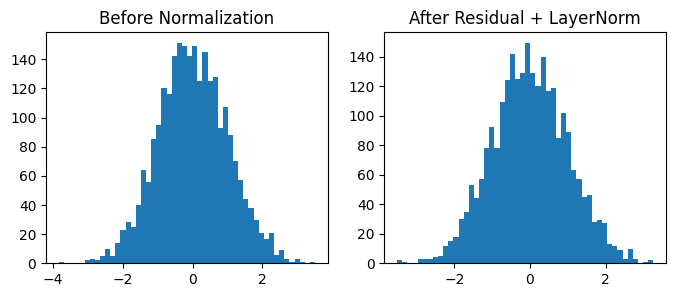

Residual Connection + Layer Normalization#
These two mechanisms are critical for:
Stabilizing deep models,
Speeding up convergence, and
Preventing vanishing gradients.
Where They Appear#
Each encoder and decoder sublayer (like Attention or Feed-Forward) has this structure:
So for every sub-layer (e.g., self-attention or FFN):
Input (x) goes directly around (residual path),
Output of the sublayer is added back to (x),
The sum is then normalized using LayerNorm.
Why Residual Connections Are Needed#
Without residuals, deep networks suffer from:
Vanishing gradients: gradients shrink as they backpropagate through many layers, leading to poor learning.
Degradation: as layers increase, accuracy drops (not due to overfitting but because deeper models fail to train properly).
Residuals solve this by creating shortcut paths for gradient flow.
Intuition#
If a layer doesn’t help, the model can learn the identity function — i.e., skip it entirely.
This ensures:
“Each new layer only learns a refinement of the previous one.”
Mathematical Formulation#
For a given sublayer \(F(x)\) (like attention or FFN):
Here:
(x): input to the sublayer
(F(x)): transformation (e.g., Multi-Head Attention or FFN output)
(x + F(x)): residual connection
LayerNorm: stabilizes scaling differences
Gradient Benefit (Core Insight)#
During backpropagation: $\( \frac{\partial y}{\partial x} = I + \frac{\partial F(x)}{\partial x} \)$
That identity matrix term (I) means gradients can flow directly, bypassing the nonlinear layers — preventing vanishing gradients.
Layer Normalization#
After adding residuals, we apply LayerNorm.
This keeps activations stable and centered, especially since residual sums can change the scale of inputs.
LayerNorm Formula#
Given an input vector \(x = [x_1, x_2, ..., x_d]\), LayerNorm normalizes across the features (not batch):
Where:
\(\mu = \frac{1}{d}\sum_i x_i\) (mean)
\(\sigma^2 = \frac{1}{d}\sum_i (x_i - \mu)^2\) (variance)
\(\gamma, \beta\) are learnable scaling parameters
Why Not BatchNorm?#
LayerNorm |
BatchNorm |
|---|---|
Normalizes across features |
Normalizes across batch dimension |
Works well with variable sequence lengths |
Requires consistent batch statistics |
No batch dependency (works for 1 sentence) |
Depends on other samples in batch |
Transformers use LayerNorm since batch sizes and sequence lengths often vary in NLP.
Step-by-Step Example#
Suppose:#
Input vector \(x = [1, 2, 3]\), Sublayer output \(F(x) = [0.5, -1, 1.5]\)
Residual addition: $\( x + F(x) = [1.5, 1, 4.5] \)$
Mean (μ): $\( \mu = (1.5 + 1 + 4.5)/3 = 2.33 \)$
Variance (σ²): $\( σ² = ((1.5-2.33)^2 + (1-2.33)^2 + (4.5-2.33)^2)/3 = 2.56 \)$
Normalization: $\( (x - μ)/\sqrt{σ² + ε} ≈ [-0.52, -0.83, 1.35] \)$
Scale + Shift: $\( y = γ \cdot \text{normalized} + β \)$
Now \(y\) has zero mean, unit variance — stable for the next layer.
Visualization (Matplotlib Example)#
import torch
import torch.nn as nn
import matplotlib.pyplot as plt
x = torch.randn(5, 512) # input tensor
sublayer = nn.Linear(512, 512)
layer_norm = nn.LayerNorm(512)
y = layer_norm(x + sublayer(x)) # residual + layernorm
plt.figure(figsize=(8,3))
plt.subplot(1,2,1)
plt.hist(x.flatten().detach().numpy(), bins=50)
plt.title("Before Normalization")
plt.subplot(1,2,2)
plt.hist(y.flatten().detach().numpy(), bins=50)
plt.title("After Residual + LayerNorm")
plt.show()

Example Calculation#
Suppose a token embedding (for word “Cat”) is: $\( x = [2, 4, 6, 8] \)\( and the sublayer output (say, after attention) is: \)\( F(x) = [1, -1, 2, 0] \)$
Then:
Step 1: Add residual#
Step 2: LayerNorm#
Mean: $\( \mu = (3 + 3 + 8 + 8) / 4 = 5.5 \)$
Variance: $\( \sigma^2 = \frac{1}{4}[(3-5.5)^2 + (3-5.5)^2 + (8-5.5)^2 + (8-5.5)^2] = 6.25 \)$
Normalize: $\( (x_i - \mu) / \sqrt{\sigma^2 + \epsilon} \)$
Result (approx): $\( [-1.0, -1.0, 1.0, 1.0] \)$
Then apply: $\( y = \gamma * \text{normalized} + \beta \)$
If \(\gamma=1, \beta=0\):
That’s the normalized, stabilized output vector.
You’ll see that after normalization, activations are centered (mean ≈ 0, variance ≈ 1) — ensuring stable learning.
Where It Appears in Transformer Layers#
Each encoder (and decoder) block uses two such residual-normalization pairs:
Encoder:#
x → Multi-Head Attention → Add + LayerNorm → FFN → Add + LayerNorm
Decoder:#
x → Masked Attention → Add + LayerNorm
→ Encoder-Decoder Attention → Add + LayerNorm
→ FFN → Add + LayerNorm
Benefits Summary
Mechanism |
Role |
Effect |
|---|---|---|
Residual Connection |
Shortcut for gradients |
Prevents vanishing; faster convergence |
LayerNorm |
Normalizes feature distributions |
Stabilizes activations; prevents exploding gradients |
Together |
Maintain scale and information flow |
Enables very deep training (6–48+ layers) |
In Short:#
Residual Connection: keeps old information alive and stabilizes gradients. Layer Normalization: keeps new activations numerically stable. Together, they make deep Transformers trainable, stable, and efficient.